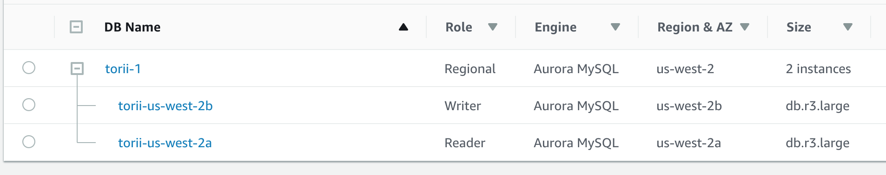
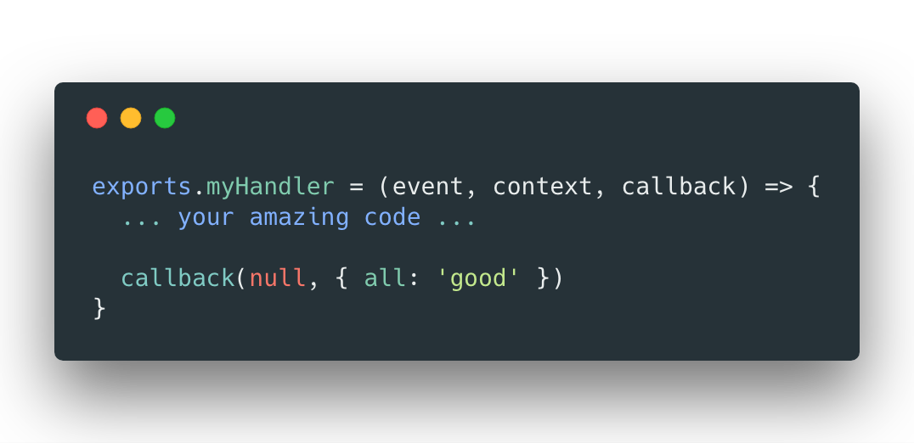
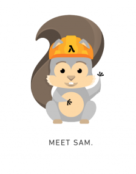
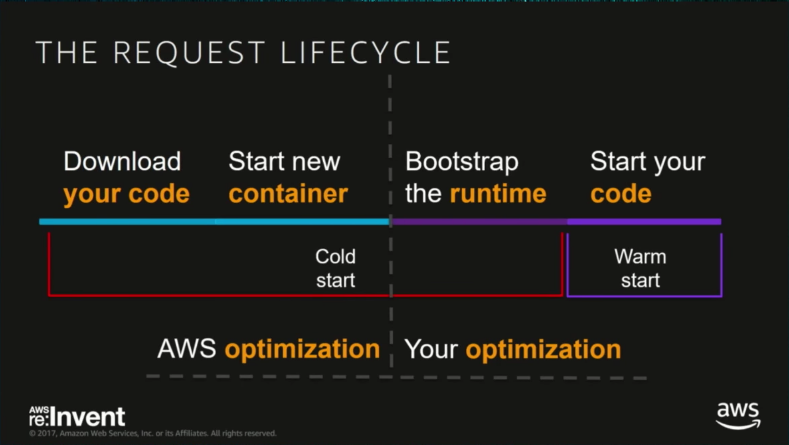

Serverless
👋
Tal Bereznitskey
- Co-founder and CTO at (toriihq.com)
- Previous: Bizzabo, Checkpoint
- Coding since age of 6
Running
Highly Available
Large Scale
Systems Is a Lot of Work
What is Serverless
Serverless allows you to build and run applications and services without thinking about servers
EXAMPLE: S3
- How many file servers do you have?
- What is the CPU/Memory size of each server?
- How do you handle high traffic?
Serverless vs. Managed
Is RDS serverless?
RDS is not serverless ⛔️ 
Serverless Features
- High availability
- Scales from 0 to Infinity
- Pay per use
- No server management
Function as a Service - AWS Lambda
DEMO TIME
👩💻👨💻
See demo codeServerless Frameworks

What just happened?
API Server
A good match for FaaS
HTTP Request in, HTTP response out
Need a friend: AWS Gateway
DEMO TIME
🤖
See demo codePower to the devs
Use it for your next side project
Use it in a small work project
Build your startup on it
Serverless @Torii
We're 100% serverless
API Server(s)
Background jobs
THE GOOD PARTS 👍
Deployment Best Practices
- Zero downtime
- Versioning
- Aliases
- Instant Rollbacks
- Infinite environments
No-ops
Things we don't do:
- Write scripts
- Configure Nginx
- Patch Linux
- Craft Dockerfiles
- Debug high CPU
- Worry about scale
Auto scaling, up and down
(all the way to 0)
Cost
| Option | Cost per hour |
|---|---|
| Lambda (512 MB) | $0.03 |
| EC2 (512 MB) | $0.0052 |
| EC2 (512 MB) + devops time | 🤑🤑🤑 |
(Cost depends on idleness)
Security
Automatic OS and runtime security patches
Permissions per function
Short living "servers"
Actively Improving
Since we started
- 30 seconds 👉 5 mins 👉 15 mins
- Node v6 👉 Node v8 👉 any version
- Lambda @edge
- Websockets support
Since most infra is on AWS, it keeps improving
CHALLANGES 🤔
Limits
15 minute max run time
30 seconds for API Gateway responses
No persistent file system
Performance - Cold starts
Other challenges
- Local Development
- DB Connection Pools
- Latency
Questions?
Tal Bereznitskey
- Works: Founder and CTO at Torii (toriihq.com)
- Codes: github.com/berzniz
- Tweets: @ketacode
- Writes: medium.com/ketacode, berzniz.com, ketacode.com